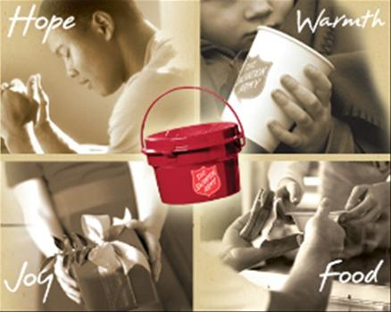

|
Extending the hand of God to those in our community who need hope for tomorrow. North York Temple Family Services provides emergency food and clothing assistance to those who require aid. They also coordinate Christmas Hampers and help clients with counselling and referral services. Located at the church on the lower level. Entrance at the front of the building. |

|
|
Office Hours: Tuesday - Friday 8:00am - 12:00 noon, 1:00pm - 4:00pm
For more information, contact Marina Williams at: Phone: 416-225-6683 Email: famserv@bellnet.ca |
|
25 Centre Ave North York, ON M1H 2C3 |
Phone: 416-225-7968 e-mail: corps@northyorktemple.ca |